Ohio precinct maps
November 3, 2026 special U.S. Senate election • unexpired term ending January 3, 2029
Research assets, with source defects and historical vintages preserved. No county boundary is certified here for November 2026. No native reporting-unit geographic crosswalk or vote allocation is validated.
Exact 32 priority counties: 4,581,738 / 5,704,620 2024 Senate votes = 80.3162699707%. All 88 counties are inventoried. Current-published county files, historical originals and Census 2020 statistical VTD references remain distinct. A successful artifact check does not approve boundaries.
All 88 county inventory CSV · Detailed inventory · HTTP sources, UTC times, headers and hashes · Native-ID comparisons · Exact gaps · Offline validation · Reproduce
census-state-vtd.bin — one complete official Census 2020 Ohio VTD ZIP, 8,941 features / 88 counties. This is a historical statistical reference, not approved 2026 precincts.
1. Franklin
FIPS 39049 · native county ID Franklin · 2024 units 888 · 2022 units 884
Primary official route — BOE GIS downloads: separate 2025, 2023 and 2022 sections, eight individually ZIP-wrapped shapefile components per vintage.
889/888/884 features respectively. The 2023 and 2022 counts equal the 2024 and 2022 reporting rosters, but matching counts do not establish a crosswalk. PRECINCTID is not automatically the statewide letter code.
 franklin-2025 — display-only native-coordinate SVG; original geometry/CRS retained separately.
franklin-2025 — display-only native-coordinate SVG; original geometry/CRS retained separately.
franklin-2022 · 884 records · 2022 section on BOE page; effective date unestablished
0 empty; 8 invalid; 7 positive-area overlap pairs. These are diagnostics, not approval. Full source attributes, ID uniqueness and defects
CRS ['EPSG', '3735'] · native extent [1755366.650172513, 653901.6999394074, 1895284.85007637, 781154.4633959681]
SVG preview · Derived CRS84 GeoJSON (gzip) · Official service/publication
Retained original files and query evidence:
franklin-2023 · 888 records · 2023 section on BOE page; effective date unestablished
0 empty; 8 invalid; 136 positive-area overlap pairs. These are diagnostics, not approval. Full source attributes, ID uniqueness and defects
CRS ['EPSG', '3735'] · native extent [1755366.650172513, 653901.6999394074, 1895284.85007637, 781154.4633959681]
SVG preview · Derived CRS84 GeoJSON (gzip) · Official service/publication
Retained original files and query evidence:
franklin-2025 · 889 records · 2025 section on BOE page; effective date unestablished
0 empty; 7 invalid; 25 positive-area overlap pairs. These are diagnostics, not approval. Full source attributes, ID uniqueness and defects
CRS ['EPSG', '3735'] · native extent [1755366.650172513, 653901.6999394074, 1895284.85007637, 781154.4633959681]
SVG preview · Derived CRS84 GeoJSON (gzip) · Official service/publication
Retained original files and query evidence:
Separate Census 2020 historical reference · 884 VTDs
Reference preview · Derived reference GeoJSON (gzip) · Shared complete statewide original · Diagnostics
2. Cuyahoga
FIPS 39035 · native county ID Cuyahoga · 2024 units 967 · 2022 units 975
Primary official route — BOE Bay Village app c676abf37dfc4f27a23d6258f62b8b11 links webmap 42065a3a00e84159854273743e38b807; shared countywide Voting_Precincts_region layer retrieved without the city app filter.
923 features versus 967/975 native units. Effective date and November 2026 approval unestablished; invalid geometry and overlaps retained.
 cuyahoga — display-only native-coordinate SVG; original geometry/CRS retained separately.
cuyahoga — display-only native-coordinate SVG; original geometry/CRS retained separately.
cuyahoga · 923 records · current-published; effective date unestablished
0 empty; 15 invalid; 1780 positive-area overlap pairs. These are diagnostics, not approval. Full source attributes, ID uniqueness and defects
CRS ['EPSG', '3857'] · native extent [-9124984.847, 5053005.7348, -9058592.8164, 5105966.8773]
SVG preview · Derived CRS84 GeoJSON (gzip) · Official service/publication
Retained original files and query evidence:
Separate Census 2020 historical reference · 976 VTDs
Reference preview · Derived reference GeoJSON (gzip) · Shared complete statewide original · Diagnostics
3. Hamilton
FIPS 39061 · native county ID Hamilton · 2024 units 562 · 2022 units 562
Primary official route — Cincinnati Area Geographic Information System official open-data collection, precinct layer 41; county/city GIS publisher identified by service metadata and CAGIS open-data catalog.
563 features versus 562/562 units. CAGIS landing direct HTTP 403; service complete. No county BOE adoption or 2026 crosswalk established.
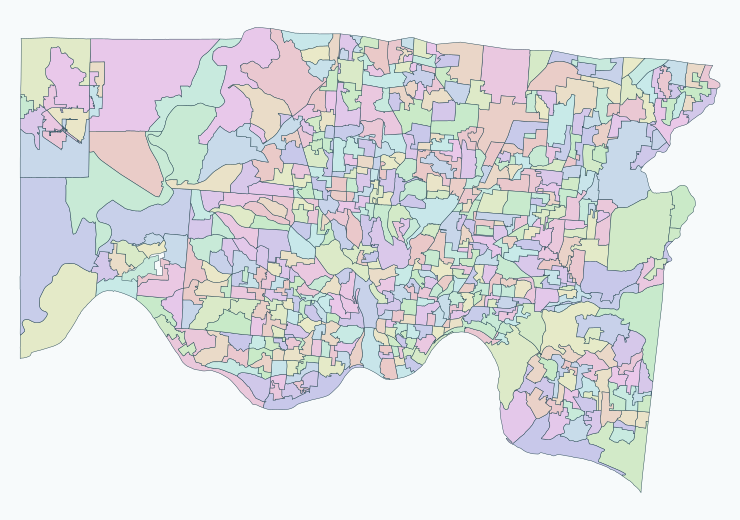
hamilton — display-only native-coordinate SVG; original geometry/CRS retained separately.
hamilton · 563 records · current-published; effective date unestablished
0 empty; 2 invalid; 20 positive-area overlap pairs. These are diagnostics, not approval. Full source attributes, ID uniqueness and defects
CRS ['EPSG', '3857'] · native extent [-9442153.6824861, 4724757.67819921, -9379372.58913178, 4766471.08687789]
SVG preview · Derived CRS84 GeoJSON (gzip) · Official service/publication
Retained original files and query evidence:
Separate Census 2020 historical reference · 563 VTDs
Reference preview · Derived reference GeoJSON (gzip) · Shared complete statewide original · Diagnostics
4. Summit
FIPS 39153 · native county ID Summit · 2024 units 371 · 2022 units 420
Primary official route — Current BOE map landing is browser-viewable; direct shared-host and summitcountyboe.gov requests return 403. Retained complete official county council map with precinct outlines from a 2010 archive capture.
Historical PDF printed November 5, 2007 is a council map with precinct lines, not a current full precinct package. The archived 420-precinct PDFs were truncated at 1 MiB and excluded. Current and 2024/2022 boundary snapshots remain missing; Census 2020 is a separate statistical reference.
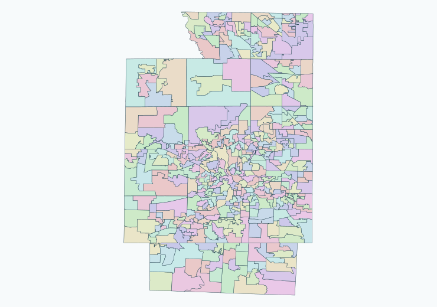
Census 2020 VTD reference only; county current geometry download gap described above.
1 complete PDF files / 1 pages — originals and previews
Separate Census 2020 historical reference · 420 VTDs
Reference preview · Derived reference GeoJSON (gzip) · Shared complete statewide original · Diagnostics
5. Montgomery
FIPS 39113 · native county ID Montgomery · 2024 units 381 · 2022 units 381
Primary official route — BOE candidate tools references Auditor GIS, mcohio.org/631/GIS-Downloads, then official go.mcohio.org GIS download listing and SHAPEFILE_BOARD_OF_ELECTIONS.zip.
One original ZIP contains 2022-named 497-piece layer and historical 2021/2017/2012 layers (463/459/395). Listing modified June 26, 2026 is publication evidence, not approval. Numeric polygon IDs and split pieces are not statewide reporting-unit codes.
 montgomery-2022 — display-only native-coordinate SVG; original geometry/CRS retained separately.
montgomery-2022 — display-only native-coordinate SVG; original geometry/CRS retained separately.
montgomery-2022 · 497 records · 2022-named layer in currently published June 2026 ZIP; not approval
0 empty; 2 invalid; 102 positive-area overlap pairs. These are diagnostics, not approval. Full source attributes, ID uniqueness and defects
CRS ['EPSG', '3735'] · native extent [1410775.7502499968, 578872.4747499973, 1533235.9888750017, 704933.7500499934]
SVG preview · Derived CRS84 GeoJSON (gzip) · Official service/publication
Retained original files and query evidence:
montgomery-2021 · 463 records · historical 2021
0 empty; 1 invalid; 324 positive-area overlap pairs. These are diagnostics, not approval. Full source attributes, ID uniqueness and defects
CRS ['EPSG', '3735'] · native extent [1410775.7502000034, 578872.4748000056, 1533235.9888000041, 704933.75]
SVG preview · Derived CRS84 GeoJSON (gzip) · Official service/publication
Retained original files and query evidence:
montgomery-2017 · 459 records · historical 2017
0 empty; 1 invalid; 331 positive-area overlap pairs. These are diagnostics, not approval. Full source attributes, ID uniqueness and defects
CRS ['EPSG', '3735'] · native extent [1410775.7502000034, 578872.4748000056, 1533235.9888000041, 704933.75]
SVG preview · Derived CRS84 GeoJSON (gzip) · Official service/publication
Retained original files and query evidence:
montgomery-2012 · 395 records · historical 2012
0 empty; 0 invalid; 6 positive-area overlap pairs. These are diagnostics, not approval. Full source attributes, ID uniqueness and defects
CRS ['EPSG', '3735'] · native extent [1410775.7502000034, 578872.4748000056, 1533235.9888000041, 704933.75]
SVG preview · Derived CRS84 GeoJSON (gzip) · Official service/publication
Retained original files and query evidence:
Separate Census 2020 historical reference · 360 VTDs
Reference preview · Derived reference GeoJSON (gzip) · Shared complete statewide original · Diagnostics
6. Lucas
FIPS 39095 · native county ID Lucas · 2024 units 303 · 2022 units 313
Primary official route — County GIS maps/data landing and official Lucas County ArcGIS organization; Lucas_County_Wards_and_Precincts layer 8 is countywide.
283 features retained. No effective date, BOE adoption, or validated reporting-unit crosswalk established.
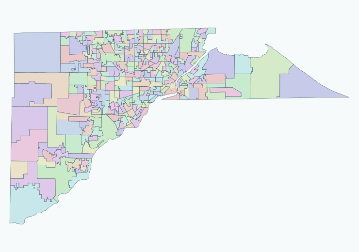
lucas — display-only native-coordinate SVG; original geometry/CRS retained separately.
lucas · 283 records · current-published; effective date unestablished
0 empty; 0 invalid; 253 positive-area overlap pairs. These are diagnostics, not approval. Full source attributes, ID uniqueness and defects
CRS ['EPSG', '3734'] · native extent [1589149.03055881, 639844.24397698, 1786916.48476064, 754285.174215391]
SVG preview · Derived CRS84 GeoJSON (gzip) · Official service/publication
Retained original files and query evidence:
Separate Census 2020 historical reference · 313 VTDs
Reference preview · Derived reference GeoJSON (gzip) · Shared complete statewide original · Diagnostics
7. Stark
FIPS 39151 · native county ID Stark · 2024 units 274 · 2022 units 273
Primary official route — Official county GIS BoardOfElections service; source attribution names BOE/GIS.
276 features; nine native true-curve records retained unchanged. Polygon-only previews/GeoJSON use a separately retained server linearization. Source invalidities and overlaps remain.
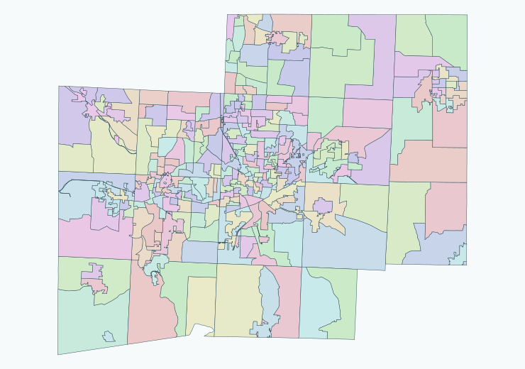
stark — display-only native-coordinate SVG; original geometry/CRS retained separately.
stark · 276 records · current-published; effective date unestablished
0 empty; 5 invalid; 95 positive-area overlap pairs. These are diagnostics, not approval. Full source attributes, ID uniqueness and defects
CRS ['EPSG', '3857'] · native extent [-9089148.93627368, 4958577.053546479, -9026494.61324287, 5010675.999165358]
SVG preview · Derived CRS84 GeoJSON (gzip) · Official service/publication
Retained original files and query evidence:
Separate Census 2020 historical reference · 274 VTDs
Reference preview · Derived reference GeoJSON (gzip) · Shared complete statewide original · Diagnostics
8. Butler
FIPS 39017 · native county ID Butler · 2024 units 291 · 2022 units 291
Primary official route — Historical BOE 2019 Precinct Shapefile.zip recovered from a February 6, 2021 archive capture. Current Auditor app 022c917993fd4ba482f164f8b0b96ba7 links webmap 6cab8380332948a4a22de12ff3b823f0.
2019 original has 329 pieces, blank/reused STATECODE values. Current BOE direct 403; linked basemap MapServer reports service not started, Hosted folder requires a token. Separate official BCEO tax-map app has no precinct layer. Current and 2024/2022 geometry remain unvalidated/missing.
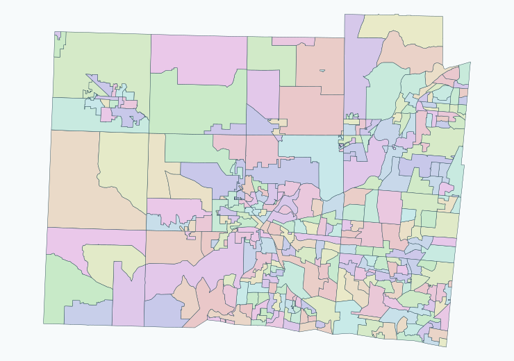
butler-2019 — display-only native-coordinate SVG; original geometry/CRS retained separately.
butler-2019 · 329 records · historical 2019 BOE ZIP retained through archive 2021-02-06
0 empty; 0 invalid; 371 positive-area overlap pairs. These are diagnostics, not approval. Full source attributes, ID uniqueness and defects
CRS ['EPSG', '3735'] · native extent [1312246.5592736155, 476076.72454915463, 1451959.9615157428, 585139.1497387444]
SVG preview · Derived CRS84 GeoJSON (gzip) · Official service/publication
Retained original files and query evidence:
Separate Census 2020 historical reference · 282 VTDs
Reference preview · Derived reference GeoJSON (gzip) · Shared complete statewide original · Diagnostics
9. Lorain
FIPS 39093 · native county ID Lorain · 2024 units 204 · 2022 units 203
Primary official route — BOE map page supplies countywide and city/township PDFs. Retained every linked map PDF with all-page contact sheets.
33 precinct PDFs / 264 pages, plus a separately labeled 5-page Grafton Village ward-map supplement. Countywide PDF creation June 10, 2026; subdivision publication dates vary 2024–2026. Metadata/upload date is not effective approval.
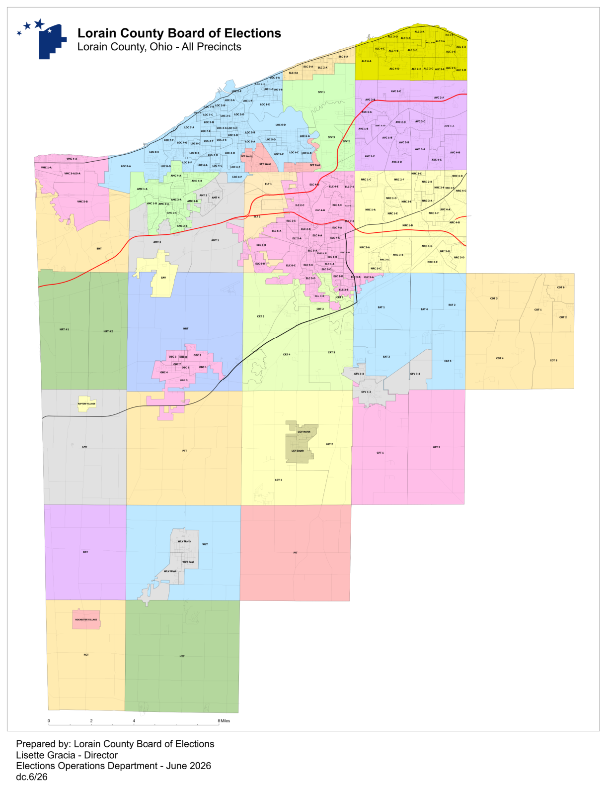
Lorain County — first-page raster preview; full original and every-page contact sheet below.
34 complete PDF files / 269 pages — originals and previews
Separate Census 2020 historical reference · 194 VTDs
Reference preview · Derived reference GeoJSON (gzip) · Shared complete statewide original · Diagnostics
10. Warren
FIPS 39165 · native county ID Warren · 2024 units 175 · 2022 units 175
Primary official route — BOE home links official doc/Maps/Voter_Precincts1.pdf.
Complete countywide PDF printed April 14, 2025. No 2026 approval or validated reporting-unit crosswalk.
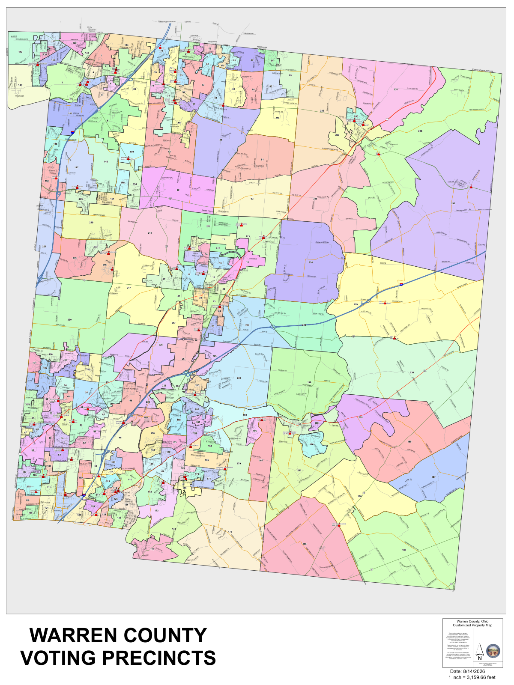
Warren County precincts — first-page raster preview; full original and every-page contact sheet below.
1 complete PDF files / 1 pages — originals and previews
Separate Census 2020 historical reference · 175 VTDs
Reference preview · Derived reference GeoJSON (gzip) · Shared complete statewide original · Diagnostics
11. Delaware
FIPS 39041 · native county ID Delaware · 2024 units 170 · 2022 units 167
Primary official route — Official county GIS links gisdata-delco.hub.arcgis.com; retained Precincts FeatureServer layer 0.
180 features; native precinctid/name preserved. Current publication alone does not validate the 2024/2022/2026 topology.
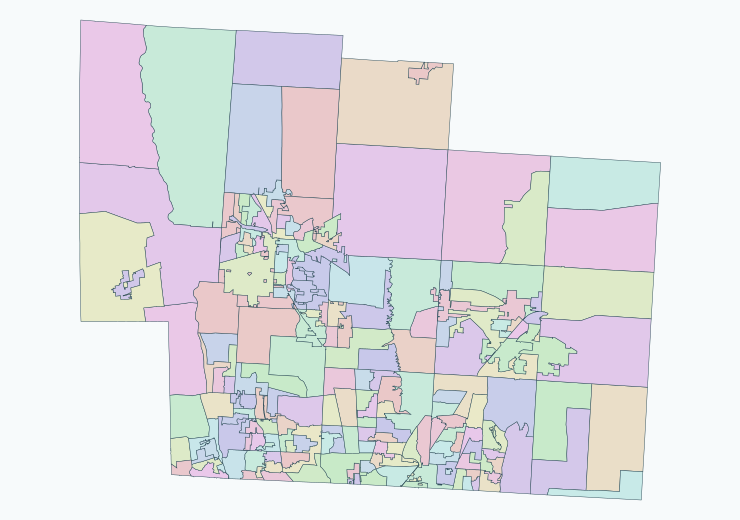
delaware — display-only native-coordinate SVG; original geometry/CRS retained separately.
delaware · 180 records · current-published; effective date unestablished
0 empty; 0 invalid; 104 positive-area overlap pairs. These are diagnostics, not approval. Full source attributes, ID uniqueness and defects
CRS ['EPSG', '3857'] · native extent [-9267332.6456, 4884267.0125, -9211123.6594, 4930672.7797]
SVG preview · Derived CRS84 GeoJSON (gzip) · Official service/publication
Retained original files and query evidence:
Separate Census 2020 historical reference · 165 VTDs
Reference preview · Derived reference GeoJSON (gzip) · Shared complete statewide original · Diagnostics
12. Lake
FIPS 39085 · native county ID Lake · 2024 units 163 · 2022 units 163
Primary official route — BOE page embeds official wpassets.lakecountyohio.gov PDF links.
21 complete PDFs / 21 pages, including separate Painesville City 2023 and 2025 vintages. Printed adoption dates vary 2009–2025; later update/upload dates do not certify November 2026 boundaries.
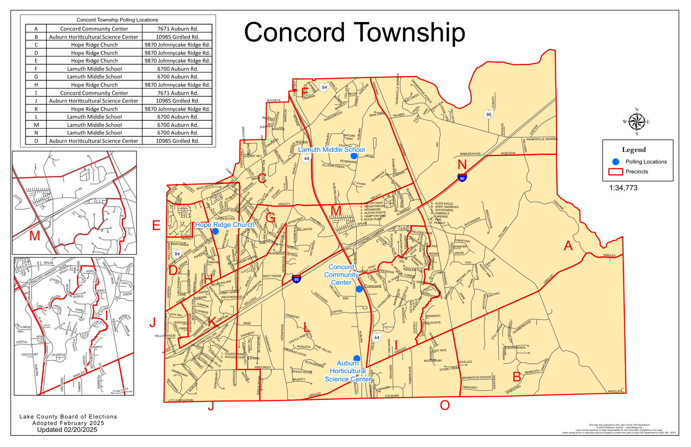
Concord11X17.pdf — first-page raster preview; full original and every-page contact sheet below.
21 complete PDF files / 21 pages — originals and previews
- Concord11X17.pdf · 1 pages · precinct-map · every-page contact sheet · page 1 · source
mixed dates in individual PDF, uploads not effective dates; Adopted February 2025; This map was prepared by the Lake County GIS Department; Updated 02/20/2025
- Eastlake.pdf · 1 pages · precinct-map · every-page contact sheet · page 1 · source
mixed dates in individual PDF, uploads not effective dates; Adopted August 2015; This map was prepared by the Lake County GIS Department; Updated 8/26/26
- Fairport-Harbor_Grand-River-10-24-19.pdf · 1 pages · precinct-map · every-page contact sheet · page 1 · source
mixed dates in individual PDF, uploads not effective dates; ADOPTED JULY 2009; This map was prepared by the Lake County GIS Department; Updated 10/23/19
- Kirtland-8-6-15.pdf · 1 pages · precinct-map · every-page contact sheet · page 1 · source
mixed dates in individual PDF, uploads not effective dates; ADOPTED DECEMBER 2014; This map was prepared by the Lake County GIS Department; Updated 8/6/15
- Lakeline_Timberlake-10-6-21.pdf · 1 pages · precinct-map · every-page contact sheet · page 1 · source
mixed dates in individual PDF, uploads not effective dates; This map was prepared by the Lake County GIS Department; Adopted December 2013; Updated 10/1/21
- Leroy-8-7-15.pdf · 1 pages · precinct-map · every-page contact sheet · page 1 · source
mixed dates in individual PDF, uploads not effective dates; ADOPTED JULY 2009; This map was prepared by the Lake County GIS Department; Updated 8/7/15
- MadisonTwp_MadisonVillage-4-13-22.pdf · 1 pages · precinct-map · every-page contact sheet · page 1 · source
mixed dates in individual PDF, uploads not effective dates; Adopted August 2015; This map was prepared by the Lake County GIS Department; Updated 4/13/22; 1956 Red Bird Ln.
- Mentor_ward1-11-21-23.pdf · 1 pages · precinct-map · every-page contact sheet · page 1 · source
mixed dates in individual PDF, uploads not effective dates; Adopted January 2020; This map was prepared by the Lake County GIS Department; Updated 11/28/23
- Mentor_ward2-10-4-21.pdf · 1 pages · precinct-map · every-page contact sheet · page 1 · source
mixed dates in individual PDF, uploads not effective dates; Adopted September 2017; Updated 10/4/21; This map was prepared by the Lake County GIS Department
- Mentor_ward3-8-12-16.pdf · 1 pages · precinct-map · every-page contact sheet · page 1 · source
mixed dates in individual PDF, uploads not effective dates; This map was prepared by the Lake County GIS Department; Adopted September 2011; Updated 8/11/16
- MentorWard4_Dec2023.pdf · 1 pages · precinct-map · every-page contact sheet · page 1 · source
mixed dates in individual PDF, uploads not effective dates; This map was prepared by the Lake county GIS Department; Adopted: September 2020; Updated: 12/26/2023
- MentorOnTheLake-2015.pdf · 1 pages · precinct-map · every-page contact sheet · page 1 · source
mixed dates in individual PDF, uploads not effective dates; ADOPTED DECEMBER 2014; This map was prepared by the Lake County GIS Department; Updated 1/6/15
- Painesville-City-2025.pdf · 1 pages · precinct-map · every-page contact sheet · page 1 · source
mixed dates in individual PDF, uploads not effective dates; Adopted February 2025; This map was prepared by the Lake County GIS Department; Updated 02/20/25
- Painesville-City-Precinct-Map-2023.pdf · 1 pages · precinct-map · every-page contact sheet · page 1 · source
mixed dates in individual PDF, uploads not effective dates; Adopted September 2017; This map was prepared by the Lake County GIS Department; Updated 02/15/23
- Painesville-Twp-10-15-2024.pdf · 1 pages · precinct-map · every-page contact sheet · page 1 · source
mixed dates in individual PDF, uploads not effective dates; Adopted January 2020; This map was prepared by the Lake County GIS Department; Updated 1/28/20
- Perry-Twp_Perry-Village_North-Perry-8-12-16.pdf · 1 pages · precinct-map · every-page contact sheet · page 1 · source
mixed dates in individual PDF, uploads not effective dates; ADOPTED SEPTEMBER 2011; Updated 8/12/16; This map was prepared by the Lake County GIS Department
- WaiteHill_KirtlandHills-8-7-15.pdf · 1 pages · precinct-map · every-page contact sheet · page 1 · source
mixed dates in individual PDF, uploads not effective dates; ADOPTED JULY 2009; This map was prepared by the Lake County GIS Department; Updated 8/7/15
- Wickliffe-10-5-21.pdf · 1 pages · precinct-map · every-page contact sheet · page 1 · source
mixed dates in individual PDF, uploads not effective dates; Adopted August 2015; This map was prepared by the Lake County GIS Department; Updated 8/7/15
- Willoughby-10-20-21.pdf · 1 pages · precinct-map · every-page contact sheet · page 1 · source
mixed dates in individual PDF, uploads not effective dates; Adopted January 2020; Updated 10/20/21
- Willoughby-Hills-10-24-19.pdf · 1 pages · precinct-map · every-page contact sheet · page 1 · source
mixed dates in individual PDF, uploads not effective dates; ADOPTED OCTOBER 2019; This map was prepared by the Lake County GIS Department; Updated 10/24/19
- Willowick-10-25-19.pdf · 1 pages · precinct-map · every-page contact sheet · page 1 · source
mixed dates in individual PDF, uploads not effective dates; This map was prepared by the Lake County GIS Department; Adopted August 2019; Updated 8/13/19
Separate Census 2020 historical reference · 164 VTDs
Reference preview · Derived reference GeoJSON (gzip) · Shared complete statewide original · Diagnostics
13. Clermont
FIPS 39025 · native county ID Clermont · 2024 units 168 · 2022 units 168
Primary official route — Official county GIS download listing links maps.clermontcountyohio.gov/gis/VotingPrecincts.zip.
344 original polygon pieces but 168 unique STATEID values; preserve every piece and reused ID. Current listing September 16, 2026 is not approval. An 87 MB historical 2023 archive was listed but not retained; no historical crosswalk asserted.
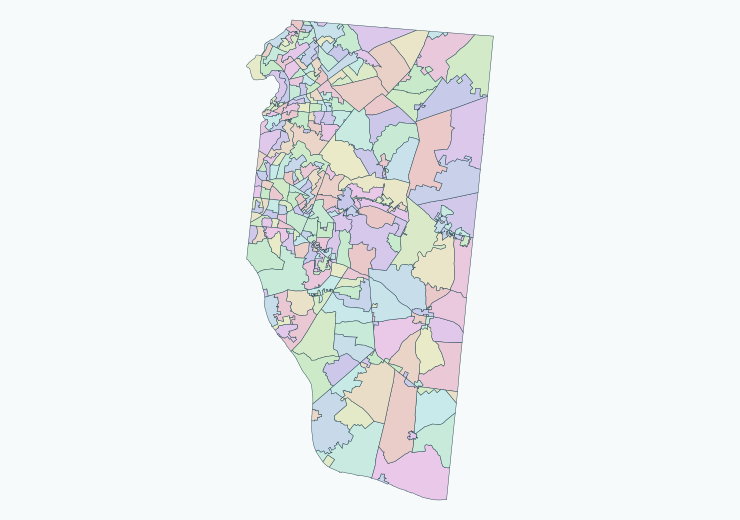
clermont-published — display-only native-coordinate SVG; original geometry/CRS retained separately.
clermont-published · 344 records · published ZIP; effective date unestablished
0 empty; 1 invalid; 83 positive-area overlap pairs. These are diagnostics, not approval. Full source attributes, ID uniqueness and defects
CRS ['EPSG', '3857'] · native extent [-9386469.2222, 4689044.578699999, -9349712.0046, 4760544.566200003]
SVG preview · Derived CRS84 GeoJSON (gzip) · Official service/publication
Retained original files and query evidence:
Separate Census 2020 historical reference · 166 VTDs
Reference preview · Derived reference GeoJSON (gzip) · Shared complete statewide original · Diagnostics
14. Mahoning
FIPS 39099 · native county ID Mahoning · 2024 units 212 · 2022 units 212
Primary official route — Official GIS download page links gisapp.mahoningcountyoh.gov/Public_FTP_Folder/Shape_Files/.
Separate Precincts_2025 (213 features), Precints_2020 (214 features, two empty), and undated Voting_Precincts ZIP retained. Undated ZIP has no PRJ and is not reprojected or assigned another vintage CRS. All native invalidities retained.
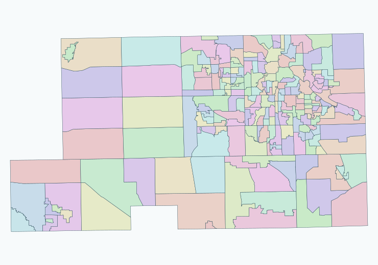
mahoning-2025 — display-only native-coordinate SVG; original geometry/CRS retained separately.
mahoning-2025 · 213 records · 2025-named county download; no November 2026 approval
0 empty; 0 invalid; 29 positive-area overlap pairs. These are diagnostics, not approval. Full source attributes, ID uniqueness and defects
CRS ['EPSG', '3734'] · native extent [2358733.1698651314, 453081.5200622231, 2516069.964442894, 540481.5217710584]
SVG preview · Derived CRS84 GeoJSON (gzip) · Official service/publication
Retained original files and query evidence:
mahoning-2020 · 214 records · historical 2020; native filename spells Precints
2 empty; 8 invalid; 9 positive-area overlap pairs. These are diagnostics, not approval. Full source attributes, ID uniqueness and defects
CRS ['EPSG', '3734'] · native extent [2358733.802409798, 453082.31008689106, 2516070.2203478813, 540574.7922538072]
SVG preview · Derived CRS84 GeoJSON (gzip) · Official service/publication
Retained original files and query evidence:
mahoning-current.bin — undated original Voting_Precincts ZIP without PRJ, preserved without reprojection.
Separate Census 2020 historical reference · 212 VTDs
Reference preview · Derived reference GeoJSON (gzip) · Shared complete statewide original · Diagnostics
15. Medina
FIPS 39103 · native county ID Medina · 2024 units 121 · 2022 units 121
Primary official route — BOE-linked gm.medinaco.org GeoMOOSE config/mapbook exposes public precincp MapServer WFS/WMS. Native GML, capabilities and count controls retained.
203 polygons, no feature IDs or attributes. WFS hits=203, unbounded/high-limit bytes identical, 10-feature control=10. No IDs manufactured. Capabilities incorrectly label projected coordinates as LatLongBoundingBox; original remains unchanged.
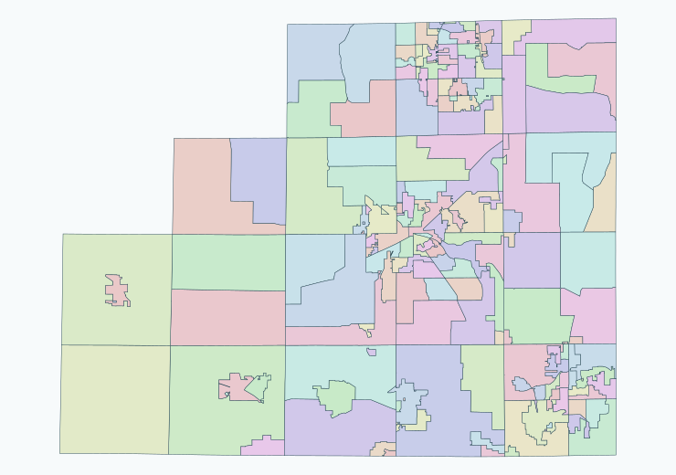
medina-wfs — display-only native-coordinate SVG; original geometry/CRS retained separately.
medina-wfs · 203 records · BOE-linked county GeoMOOSE publication; effective date unestablished
0 empty; 0 invalid; 0 positive-area overlap pairs. These are diagnostics, not approval. Full source attributes, ID uniqueness and defects
CRS ['EPSG', '3753'] · native extent [2058627.875, 482236.75, 2192591.0, 587785.25]
SVG preview · Derived CRS84 GeoJSON (gzip) · Official service/publication
Retained original files and query evidence:
Separate Census 2020 historical reference · 121 VTDs
Reference preview · Derived reference GeoJSON (gzip) · Shared complete statewide original · Diagnostics
16. Trumbull
FIPS 39155 · native county ID Trumbull · 2024 units 158 · 2022 units 158
Primary official route — Working official BOE .gov maps page links pdfs/TC_PrecinctMap.pdf; old .us host failed.
Complete countywide PDF, creation July 22, 2026. No printed effective/adoption date or November 2026 approval established.
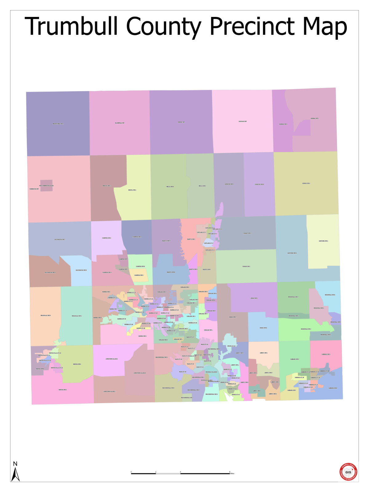
Countywide precinct map — first-page raster preview; full original and every-page contact sheet below.
1 complete PDF files / 1 pages — originals and previews
Separate Census 2020 historical reference · 158 VTDs
Reference preview · Derived reference GeoJSON (gzip) · Shared complete statewide original · Diagnostics
17. Licking
FIPS 39089 · native county ID Licking · 2024 units 96 · 2022 units 96
Primary official route — County Auditor GIS Boundaries precinct layer.
96 features; native PrecinctID and PrecinctName kept; two true-curve features separately linearized for derivatives. No 2026 approval/crosswalk.
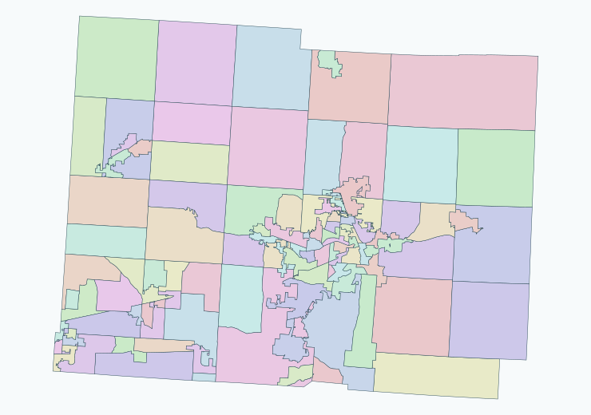
licking — display-only native-coordinate SVG; original geometry/CRS retained separately.
licking · 96 records · current-published; effective date unestablished
0 empty; 2 invalid; 14 positive-area overlap pairs. These are diagnostics, not approval. Full source attributes, ID uniqueness and defects
CRS ['EPSG', '3735'] · native extent [1889310.3148605525, 696963.4395991415, 2057050.6060197204, 829443.37214531]
SVG preview · Derived CRS84 GeoJSON (gzip) · Official service/publication
Retained original files and query evidence:
Separate Census 2020 historical reference · 96 VTDs
Reference preview · Derived reference GeoJSON (gzip) · Shared complete statewide original · Diagnostics
18. Greene
FIPS 39057 · native county ID Greene · 2024 units 146 · 2022 units 146
Primary official route — Official county GIS OpenData precinct layer.
151 features; 86 true-curve records retained in native EsriJSON. Separate server-linearized derivative required for polygon-only displays. Feature count is not a precinct roster or approval.
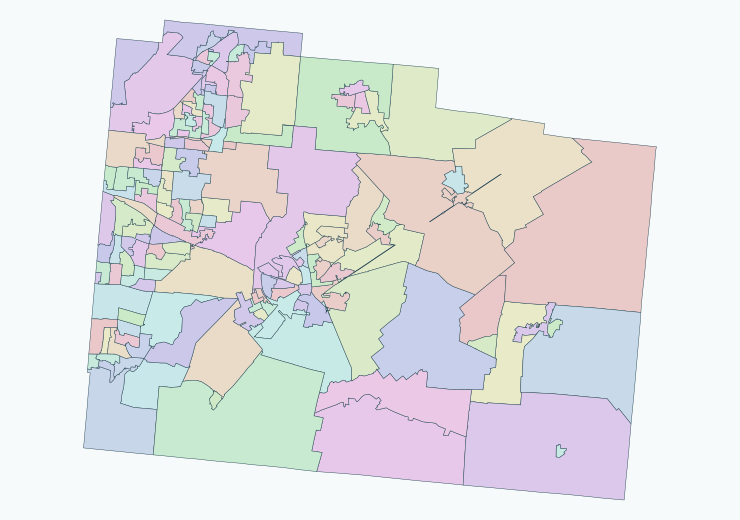
greene — display-only native-coordinate SVG; original geometry/CRS retained separately.
greene · 151 records · current-published; effective date unestablished
0 empty; 0 invalid; 47 positive-area overlap pairs. These are diagnostics, not approval. Full source attributes, ID uniqueness and defects
CRS ['EPSG', '3754'] · native extent [1513546.2106241286, 566834.6003502011, 1646006.6090884954, 677809.2435578406]
SVG preview · Derived CRS84 GeoJSON (gzip) · Official service/publication
Retained original files and query evidence:
Separate Census 2020 historical reference · 146 VTDs
Reference preview · Derived reference GeoJSON (gzip) · Shared complete statewide original · Diagnostics
19. Fairfield
FIPS 39045 · native county ID Fairfield · 2024 units 111 · 2022 units 107
Primary official route — County GIS landing links Fairfield_Data/Precincts.zip; separate official open-data FeatureServer copy retained as another publication.
133 pieces / 111 unique SOS_CODE in direct county ZIP; listing October 12, 2026 is not effective approval. ZIP and service differ in coordinate serialization/topological slivers, so originals remain separate.
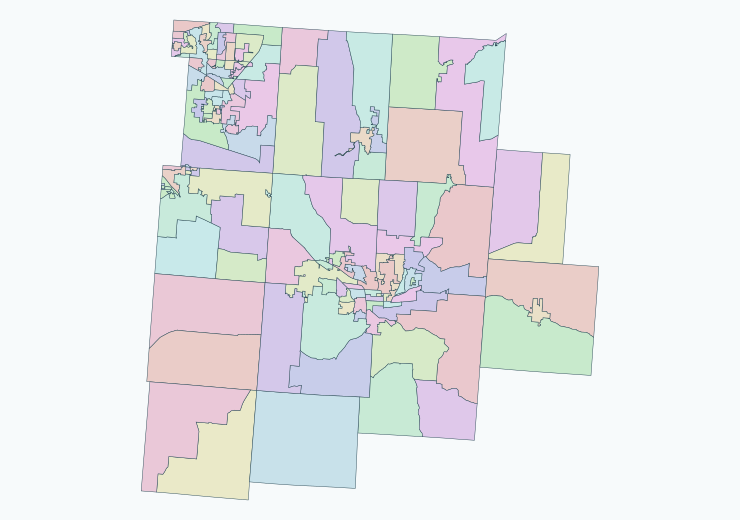
fairfield-published — display-only native-coordinate SVG; original geometry/CRS retained separately.
fairfield · 133 records · current-published; effective date unestablished
0 empty; 0 invalid; 53 positive-area overlap pairs. These are diagnostics, not approval. Full source attributes, ID uniqueness and defects
CRS ['EPSG', '3735'] · native extent [1871810.6251225, 566242.089165762, 2006098.12491967, 707117.562663585]
SVG preview · Derived CRS84 GeoJSON (gzip) · Official service/publication
Retained original files and query evidence:
fairfield-published · 133 records · county download listing 2026-10-12; effective boundary date unestablished
0 empty; 0 invalid; 69 positive-area overlap pairs. These are diagnostics, not approval. Full source attributes, ID uniqueness and defects
CRS ['EPSG', '3735'] · native extent [1871810.625, 566242.0892250091, 2006098.125, 707117.5625000149]
SVG preview · Derived CRS84 GeoJSON (gzip) · Official service/publication
Retained original files and query evidence:
Separate Census 2020 historical reference · 107 VTDs
Reference preview · Derived reference GeoJSON (gzip) · Shared complete statewide original · Diagnostics
20. Portage
FIPS 39133 · native county ID Portage · 2024 units 129 · 2022 units 129
Primary official route — County BOE/GIS routes attempted; retained countywide precinct_2017 layer published by verified City of Streetsboro GIS organization, not mislabeled county GIS.
138 features in historical 2017-named layer (catalog created 2021, modified 2023). Current county BOE download route direct 403; municipal historical publication is not county BOE approval or a current crosswalk.
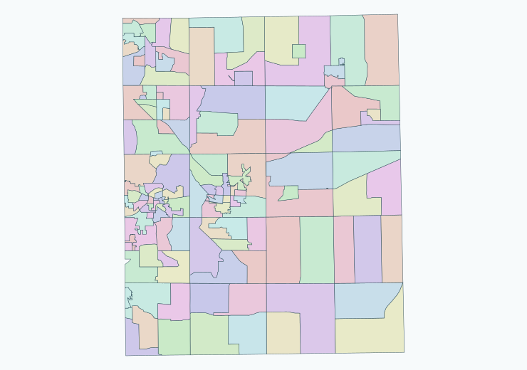
portage — display-only native-coordinate SVG; original geometry/CRS retained separately.
portage · 138 records · precinct_2017 layer name; ArcGIS service created 2021 and modified 2023; not a verified 2024/2026 boundary set
0 empty; 0 invalid; 132 positive-area overlap pairs. These are diagnostics, not approval. Full source attributes, ID uniqueness and defects
CRS ['EPSG', '6549'] · native extent [2272789.19181292, 483525.674187261, 2382024.96681519, 616031.849506222]
SVG preview · Derived CRS84 GeoJSON (gzip) · Official service/publication
Retained original files and query evidence:
Separate Census 2020 historical reference · 130 VTDs
Reference preview · Derived reference GeoJSON (gzip) · Shared complete statewide original · Diagnostics
21. Wood
FIPS 39173 · native county ID Wood · 2024 units 99 · 2022 units 97
Primary official route — BOE Maps, Cities and Townships pages link countywide, municipal, ward and individual precinct PDFs; 107 additional city/township files retained.
Countywide PDF printed August 24, 2016; many individual precinct maps print June 2024, while some city/ward summaries print January 2010 or July 2016. Every downloaded current-published packet is separately inspected for printed/metadata dates; publication does not imply 2026 approval. Numeric PDF titles are not cross-year join keys.
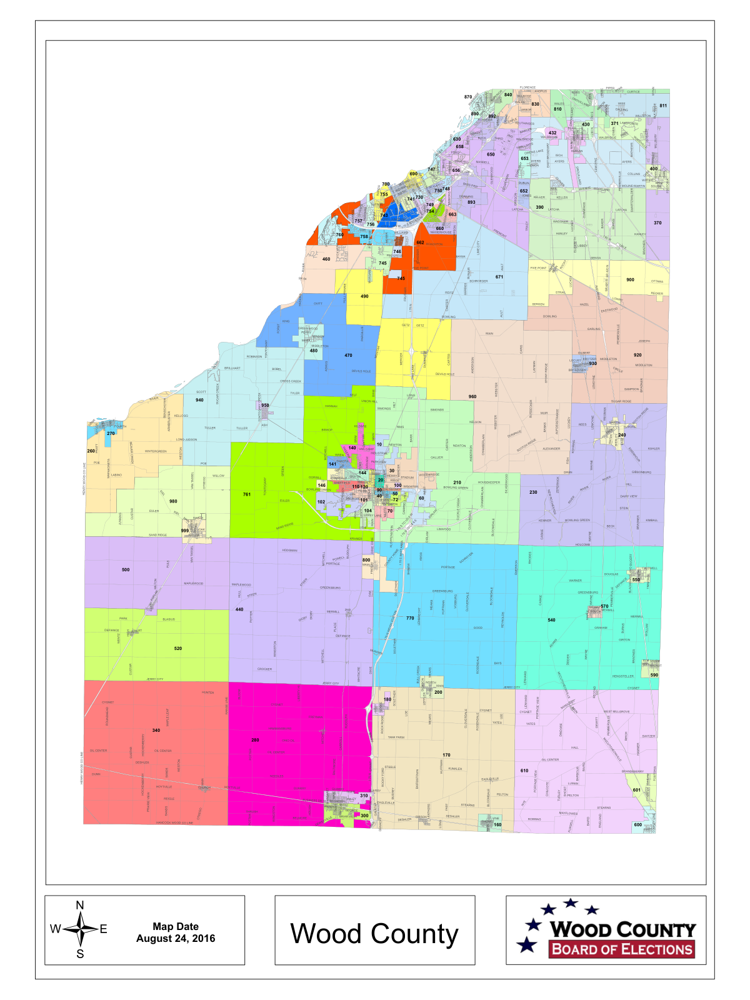
Countywide published precinct map — first-page raster preview; full original and every-page contact sheet below.
108 complete PDF files / 108 pages — originals and previews
Separate Census 2020 historical reference · 95 VTDs
Reference preview · Derived reference GeoJSON (gzip) · Shared complete statewide original · Diagnostics
22. Clark
FIPS 39023 · native county ID Clark · 2024 units 76 · 2022 units 76
Primary official route — Official Auditor GIS WMAS precinct layer.
78 pieces / 76 unique Name2 letter codes; AAA repeats in three pieces. All 76 baseline letter-code strings occur, but geography/2026 correspondence remains unvalidated. Two true-curve records, one invalid geometry retained.
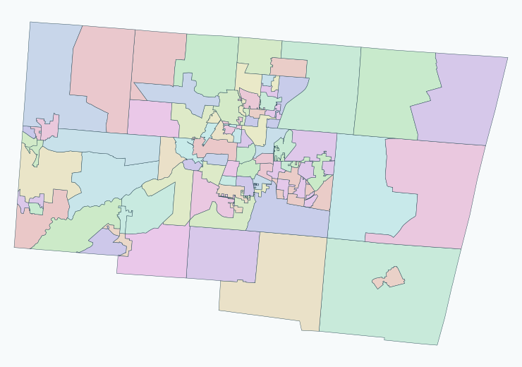
clark — display-only native-coordinate SVG; original geometry/CRS retained separately.
clark · 78 records · current-published; effective date unestablished
0 empty; 1 invalid; 33 positive-area overlap pairs. These are diagnostics, not approval. Full source attributes, ID uniqueness and defects
CRS ['EPSG', '3857'] · native extent [-9356817.071, 4832349.781800002, -9296561.7099, 4871784.300700001]
SVG preview · Derived CRS84 GeoJSON (gzip) · Official service/publication
Retained original files and query evidence:
Separate Census 2020 historical reference · 90 VTDs
Reference preview · Derived reference GeoJSON (gzip) · Shared complete statewide original · Diagnostics
23. Miami
FIPS 39109 · native county ID Miami · 2024 units 87 · 2022 units 87
Primary official route — Official county BOE FTP archive supplies complete countywide PDF.
Printed March 21, 2013. Current BOE direct 403; separately attempted 2017 precinct packet is 404. Current and 2024/2022 boundary versions are missing; Census 2020 reference remains separate.
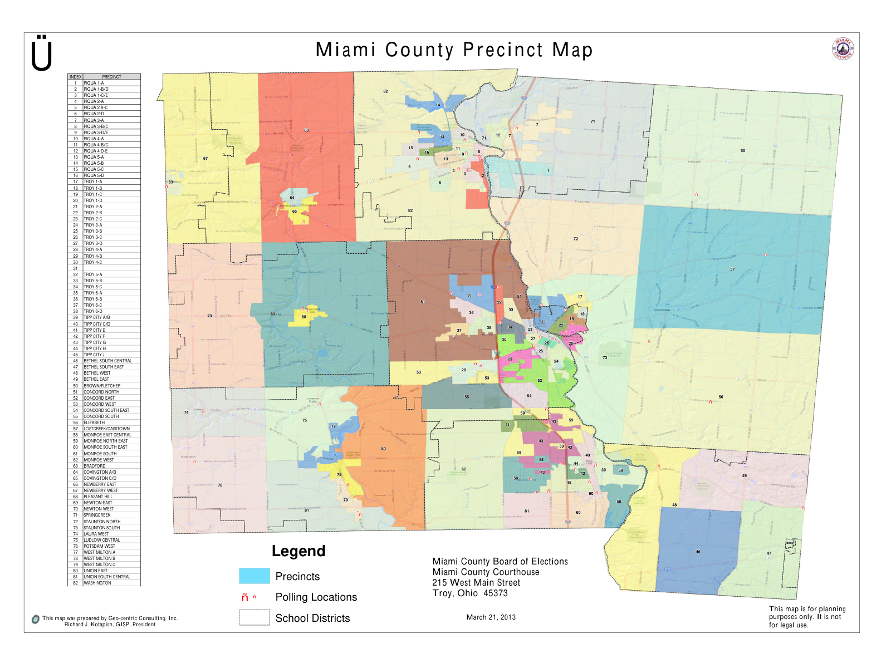
Miami countywide precincts — first-page raster preview; full original and every-page contact sheet below.
1 complete PDF files / 1 pages — originals and previews
Separate Census 2020 historical reference · 85 VTDs
Reference preview · Derived reference GeoJSON (gzip) · Shared complete statewide original · Diagnostics
24. Richland
FIPS 39139 · native county ID Richland · 2024 units 83 · 2022 units 83
Primary official route — Official BOE landing links a 166-page precinct-map/street-list PDF. Web research opens it (page 0 MAN 1-A/0100, page 2 MAN 1-B/0110); direct HTTP is 403. Browser screenshot returns a render reference, not downloadable bytes.
No usable county precinct PDF or rendered map asset retained. Historical archive captures truncate at 1 MiB and are excluded. Primary county CamaData/public GIS catalog, IASWOLRD_LGIM, Parcels and Richland_OH_Boundary_Basemap were reviewed by coordinator: no precinct layer found. The service GeopoliticalArea contains six county boundaries; separate official county Drive shapefiles contain 36 GeopoliticalArea city/township/county records and eight CountyDistrict wards/annexes, neither a complete precinct layer. Only official Census 2020 geometry is retained here. All native 2024/2022 Richland units remain without a validated county geometry match.
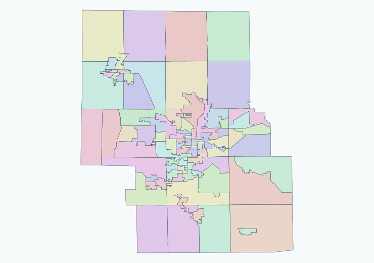
Census 2020 VTD reference only; county current geometry download gap described above.
Separate Census 2020 historical reference · 83 VTDs
Reference preview · Derived reference GeoJSON (gzip) · Shared complete statewide original · Diagnostics
25. Geauga
FIPS 39055 · native county ID Geauga · 2024 units 78 · 2022 units 78
Primary official route — Verified Geauga County GIS organization app ec316b758a2249dc80c5b29cb11ef07e links webmap 56cdd510fbd9499c80c5946ca40f6fa0, titled Voting Precincts 2026.
80 records, 79 nonempty geometries; OBJECTID 80 City of Chardon D-23 has zero-area/no geometry. This exact gap is retained, no substitute polygon. 2026 app title is not evidence of BOE approval. Historical Census reference has 78 features.
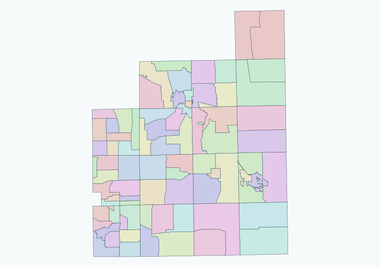
geauga — display-only native-coordinate SVG; original geometry/CRS retained separately.
geauga · 80 records · webmap layer titled Voting Precincts 2026; legal November approval not independently established
1 empty; 0 invalid; 45 positive-area overlap pairs. These are diagnostics, not approval. Full source attributes, ID uniqueness and defects
CRS ['EPSG', '3734'] · native extent [2271954.162649259, 614553.679400757, 2379413.9339497536, 749704.4563427567]
SVG preview · Derived CRS84 GeoJSON (gzip) · Official service/publication
Retained original files and query evidence:
Separate Census 2020 historical reference · 78 VTDs
Reference preview · Derived reference GeoJSON (gzip) · Shared complete statewide original · Diagnostics
26. Wayne
FIPS 39169 · native county ID Wayne · 2024 units 67 · 2022 units 67
Primary official route — Official BOE page returns HTTP 403 with its real current HTML and working HTTP 200 PDF links.
19 precinct PDFs plus one separately labeled school-district supplement. Filenames/creation dates indicate April/June 2026 publication; no printed legal effective date or 2026 crosswalk established.
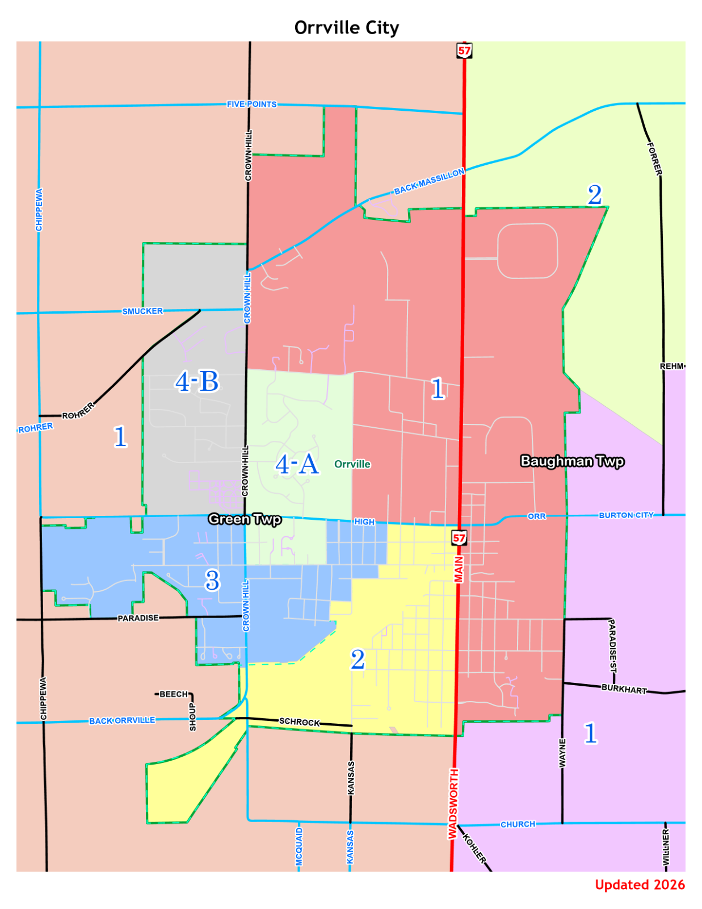
Map-0426-Orrville-City.pdf — first-page raster preview; full original and every-page contact sheet below.
20 complete PDF files / 20 pages — originals and previews
Separate Census 2020 historical reference · 67 VTDs
Reference preview · Derived reference GeoJSON (gzip) · Shared complete statewide original · Diagnostics
27. Columbiana
FIPS 39029 · native county ID Columbiana · 2024 units 73 · 2022 units 73
Primary official route — BOE-linked county GIS app 88daba67d9a9419ca0b94cf457c9e2d0 -> webmap b4d95d31d76341379d1e0579cc59dd63 -> nested precinct layer in Election_Map_for_App_2022_WFL1.
135 school/precinct pieces, 73 unique NAME values, blank/reused PREC codes. Do not collapse pieces or substitute a Census layer with a similar title; code inventory has unmatched baseline values explicitly listed.
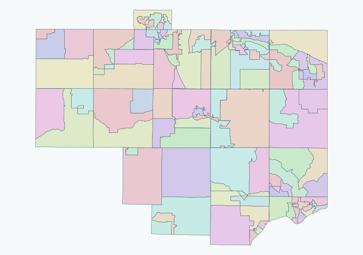
columbiana — display-only native-coordinate SVG; original geometry/CRS retained separately.
columbiana · 135 records · 2022 in service title; current BOE locator publication; effective date unestablished
0 empty; 0 invalid; 229 positive-area overlap pairs. These are diagnostics, not approval. Full source attributes, ID uniqueness and defects
CRS ['EPSG', '3857'] · native extent [-9026596.0, 4950956.2244, -8963323.0, 5002012.0]
SVG preview · Derived CRS84 GeoJSON (gzip) · Official service/publication
Retained original files and query evidence:
Separate Census 2020 historical reference · 87 VTDs
Reference preview · Derived reference GeoJSON (gzip) · Shared complete statewide original · Diagnostics
28. Allen
FIPS 39003 · native county ID Allen · 2024 units 88 · 2022 units 88
Primary official route — Official county GIS download page links img/GIS/Precinct%20Maps.pdf.
Complete 27-page scanned precinct-map packet. Listing updated May 1, 2023; printed effective date unestablished. Every page rendered; no geometry or ID crosswalk inferred from labels.
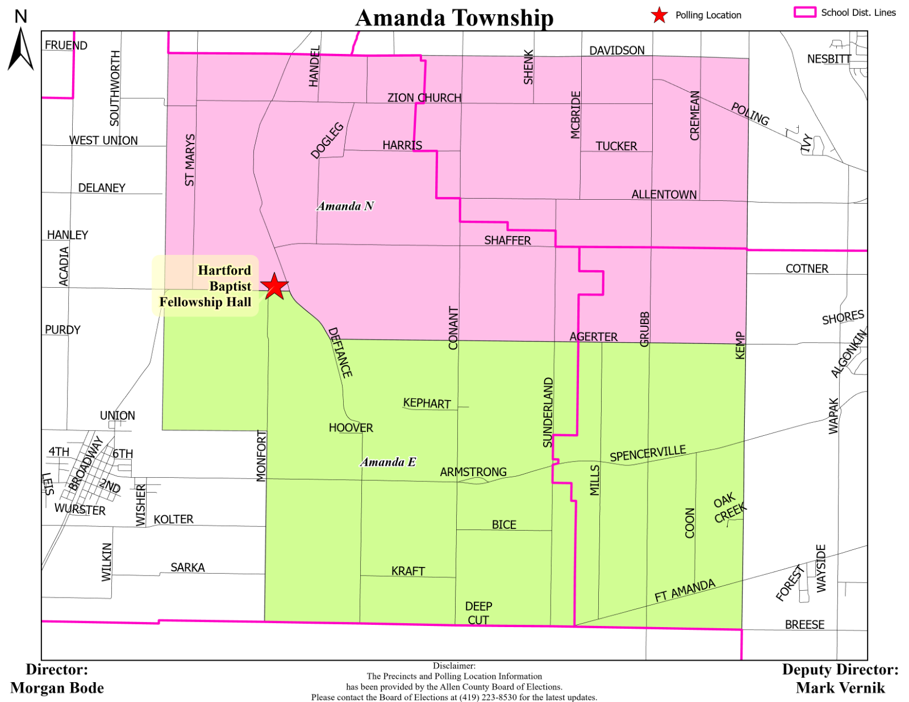
Allen precinct maps — first-page raster preview; full original and every-page contact sheet below.
1 complete PDF files / 27 pages — originals and previews
Separate Census 2020 historical reference · 88 VTDs
Reference preview · Derived reference GeoJSON (gzip) · Shared complete statewide original · Diagnostics
29. Ashtabula
FIPS 39007 · native county ID Ashtabula · 2024 units 104 · 2022 units 104
Primary official route — Verified county Auditor GIS organization item ec5157a03a054487bc64be2cc861e6cc is titled PDF but its actual download is a JPEG.
Original 816×1056 county precinct JPEG printed Adopted February 2013 and February 21, 2013. Historical catalog created 2016, modified 2018; old app services fail. Original clips some right-edge text. No current/2024/2022 county geometry obtained; Census reference separate.
 Official historical JPEG, printed February 2013; actual format differs from catalog title.
Official historical JPEG, printed February 2013; actual format differs from catalog title.
Original precinct JPEG · Image format/defect metadata
Separate Census 2020 historical reference · 105 VTDs
Reference preview · Derived reference GeoJSON (gzip) · Shared complete statewide original · Diagnostics
30. Tuscarawas
FIPS 39157 · native county ID Tuscarawas · 2024 units 81 · 2022 units 81
Primary official route — Official county GIS count/all-ID/batches return 81 precinct records, all missing geometry (also null in GeoJSON). PRECT_WEB points to old official BOE Pre-N.pdf URLs; both old host and .gov/current BOE alternatives attempted.
A verified original server-rendered PNG (2000×2600) was recovered via county MapServer export; labels and polygons visible, native EPSG 3734, effective date/approval unknown. This supplies a raster map, not vector polygons. Archive catalog contains 73 official PDF URLs captured in 2016, printed BOE 2010: 16 complete downloads succeeded, 57 connections refused, each failure retained. This is a partial historical packet, not complete current county geometry. Exact missing GIS records and historical PDF paths are in gaps.json. No polygons manufactured; Census 2020 reference remains separate.
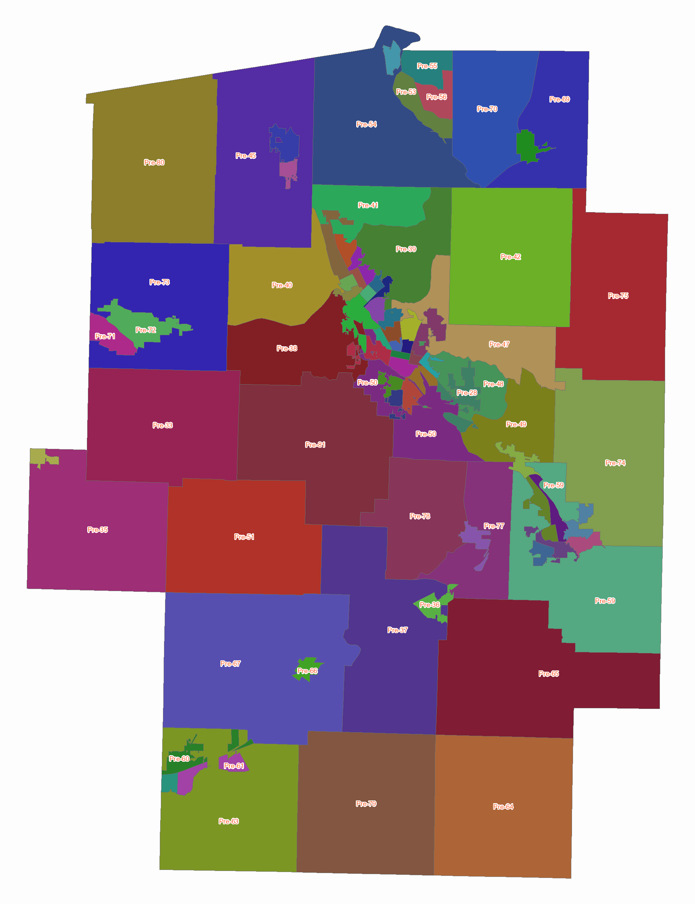
Official GIS server-rendered PNG in native EPSG 3734; raster only, vector queries still omit all 81 geometries.
tuscarawas · 81 records · current-published; effective date unestablished
81 empty; 0 invalid; 0 positive-area overlap pairs. These are diagnostics, not approval. Full source attributes, ID uniqueness and defects
CRS ['EPSG', '3734'] · native extent None
SVG preview · Derived CRS84 GeoJSON (gzip) · Official service/publication
Retained original files and query evidence:
16 complete PDF files / 16 pages — originals and previews
- Pre-1.pdf (2016 historical capture) · 1 pages · precinct-map · every-page contact sheet · page 1 · source
historical official BOE individual precinct map; 2016 archive capture, not 2026 approval; Tuscarawas Count Board of Elections 2010
- Pre-10.pdf (2016 historical capture) · 1 pages · precinct-map · every-page contact sheet · page 1 · source
historical official BOE individual precinct map; 2016 archive capture, not 2026 approval; Tuscarawas Count Board of Elections 2010
- Pre-11.pdf (2016 historical capture) · 1 pages · precinct-map · every-page contact sheet · page 1 · source
historical official BOE individual precinct map; 2016 archive capture, not 2026 approval; Tuscarawas Count Board of Elections 2010
- Pre-12.pdf (2016 historical capture) · 1 pages · precinct-map · every-page contact sheet · page 1 · source
historical official BOE individual precinct map; 2016 archive capture, not 2026 approval; Tuscarawas Count Board of Elections 2010
- Pre-13.pdf (2016 historical capture) · 1 pages · precinct-map · every-page contact sheet · page 1 · source
historical official BOE individual precinct map; 2016 archive capture, not 2026 approval; Tuscarawas Count Board of Elections 2010
- Pre-14.pdf (2016 historical capture) · 1 pages · precinct-map · every-page contact sheet · page 1 · source
historical official BOE individual precinct map; 2016 archive capture, not 2026 approval; Tuscarawas Count Board of Elections 2010
- Pre-15.pdf (2016 historical capture) · 1 pages · precinct-map · every-page contact sheet · page 1 · source
historical official BOE individual precinct map; 2016 archive capture, not 2026 approval; Tuscarawas Count Board of Elections 2010
- Pre-16.pdf (2016 historical capture) · 1 pages · precinct-map · every-page contact sheet · page 1 · source
historical official BOE individual precinct map; 2016 archive capture, not 2026 approval; Tuscarawas Count Board of Elections 2010
- Pre-17.pdf (2016 historical capture) · 1 pages · precinct-map · every-page contact sheet · page 1 · source
historical official BOE individual precinct map; 2016 archive capture, not 2026 approval; Tuscarawas Count Board of Elections 2010
- Pre-18.pdf (2016 historical capture) · 1 pages · precinct-map · every-page contact sheet · page 1 · source
historical official BOE individual precinct map; 2016 archive capture, not 2026 approval; Tuscarawas Count Board of Elections 2010
- Pre-19.pdf (2016 historical capture) · 1 pages · precinct-map · every-page contact sheet · page 1 · source
historical official BOE individual precinct map; 2016 archive capture, not 2026 approval; Tuscarawas Count Board of Elections 2010
- Pre-2.pdf (2016 historical capture) · 1 pages · precinct-map · every-page contact sheet · page 1 · source
historical official BOE individual precinct map; 2016 archive capture, not 2026 approval; Tuscarawas Count Board of Elections 2010
- Pre-20.pdf (2016 historical capture) · 1 pages · precinct-map · every-page contact sheet · page 1 · source
historical official BOE individual precinct map; 2016 archive capture, not 2026 approval; Tuscarawas Count Board of Elections 2010
- Pre-21.pdf (2016 historical capture) · 1 pages · precinct-map · every-page contact sheet · page 1 · source
historical official BOE individual precinct map; 2016 archive capture, not 2026 approval; Tuscarawas Count Board of Elections 2010
- Pre-22.pdf (2016 historical capture) · 1 pages · precinct-map · every-page contact sheet · page 1 · source
historical official BOE individual precinct map; 2016 archive capture, not 2026 approval; Tuscarawas Count Board of Elections 2010
- Pre-23.pdf (2016 historical capture) · 1 pages · precinct-map · every-page contact sheet · page 1 · source
historical official BOE individual precinct map; 2016 archive capture, not 2026 approval; Tuscarawas Count Board of Elections 2010
Original county GIS server-rendered PNG · Exact source URL / UTC / headers / hashes · Export parameters and native extent
Separate Census 2020 historical reference · 81 VTDs
Reference preview · Derived reference GeoJSON (gzip) · Shared complete statewide original · Diagnostics
31. Erie
FIPS 39043 · native county ID Erie · 2024 units 62 · 2022 units 62
Primary official route — Official Auditor GIS page references EC GIS open data; verified Erie County GIS Advisory Board organization publishes EC_Precincts (ERPC attribution).
63 features, catalog created 2016/modified 2017; effective boundary date and current BOE approval unknown. Invalid geometries/overlap diagnostics retained.
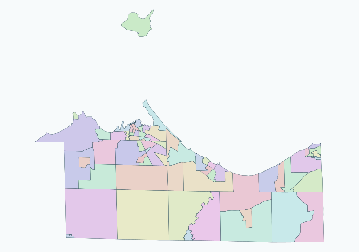
erie — display-only native-coordinate SVG; original geometry/CRS retained separately.
erie · 63 records · catalog created 2016; current publication with effective date unestablished
0 empty; 4 invalid; 91 positive-area overlap pairs. These are diagnostics, not approval. Full source attributes, ID uniqueness and defects
CRS ['EPSG', '3734'] · native extent [1858030.26477693, 589194.630053341, 2011827.170109, 713359.55495134]
SVG preview · Derived CRS84 GeoJSON (gzip) · Official service/publication
Retained original files and query evidence:
Separate Census 2020 historical reference · 63 VTDs
Reference preview · Derived reference GeoJSON (gzip) · Shared complete statewide original · Diagnostics
32. Muskingum
FIPS 39119 · native county ID Muskingum · 2024 units 68 · 2022 units 68
Primary official route — Official county maps page links Media/Muskingum-County-Voting-Precincts.pdf; official ArcGIS VotingPrecincts layer separately retained.
68 GIS features / 68 unique STATE_ID codes plus countywide PDF. Letter-code equality is inventory evidence only; current approval/geographic crosswalk unvalidated.
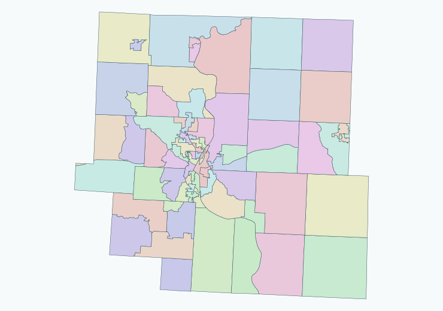
muskingum — display-only native-coordinate SVG; original geometry/CRS retained separately.
muskingum · 68 records · current-published; effective date unestablished
0 empty; 1 invalid; 103 positive-area overlap pairs. These are diagnostics, not approval. Full source attributes, ID uniqueness and defects
CRS ['EPSG', '3735'] · native extent [2043087.58440517, 640410.937218845, 2195373.24997759, 789235.500133425]
SVG preview · Derived CRS84 GeoJSON (gzip) · Official service/publication
Retained original files and query evidence:
1 complete PDF files / 1 pages — originals and previews
Separate Census 2020 historical reference · 68 VTDs
Reference preview · Derived reference GeoJSON (gzip) · Shared complete statewide original · Diagnostics